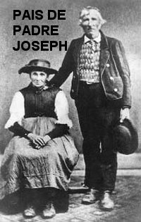
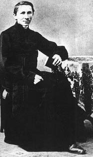
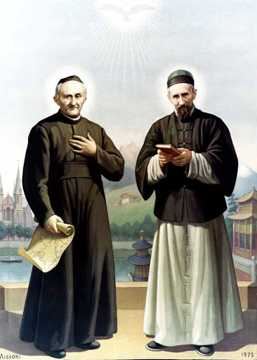
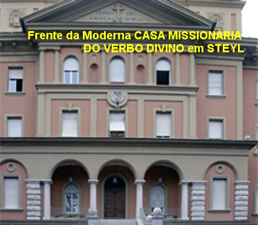

"IDEAL MISSIONÁRIO"

SUA FAMÍLIA
Joseph Freinademetz nasceu no dia 15 de Abril de 1852 numa aldeia denominada Oies (Badia) no Tirol do Sul, um pequeno vilarejo de cinco casas situadas nos Alpes Dolomitas, norte da Itália. A região fazia parte do Império Austro-Húngaro. Hoje a cidade é italiana e se denomina Alta Badia. A Aldeia estava situada a dois quilômetros da Paróquia de Badia e era uma localidade habitada pelos ladinos. Seus pais eram camponeses muito pobres e pertencia a pequena etnia dos ladinos.
Joseph era o quarto filho do senhor João Matias Freinademetz e da senhora Ana Maria Alyzang, que possuíam uma numerosa família com 13 filhos, homens e mulheres. Foi batizado no dia em que nasceu e herdou de seus pais uma fé simples, mas tenaz.
Como membro duma pequena etnia, o jovem Freinademetz se habituou a interessar por conhecer outros povos, para compreendê-los e amá-los. A sua língua materna era semelhante à dos italianos do alto Trentino; e também, o italiano, era a língua eclesiástica dos ladinos. Já na escola primária ele iniciou sua aprendizagem do idioma alemão, e foi neste idioma que realizou os estudos teológicos.
ESTUDOS, SEMINÁRIO E ORDENAÇÃO

Estudou no Seminário Diocesano e foi ordenado sacerdote pelo Bispo Dom Vicente Gasser, na Catedral da Sé Episcopal em Brixen no dia 25 de julho de 1875, mesmo ainda cursando o terceiro ano do seminário. Com dispensa de idade, o senhor Bispo o fez Vigário Paroquial na Paróquia de San Martin in Thurn, em face das suas admiráveis qualidades e de seu magnífico desempenho como Sacerdote. Para o seu conforto pessoal, o local não era longe da residência dos seus pais.
Durante o seu tempo de estudante no Seminário da Diocese em Bressanone (Brixen), Joseph sempre pensou seriamente na possibilidade de seguir o ramo missionário como uma opção possível e bem indicada para a sua vida. Mas agora, nesta Paróquia que o senhor Bispo lhe confiou, deixou os sonhos e passou a enfrentar a realidade de cada dia. Com decisão e muito amor, buscou realçar a sua competência, articulando e fazendo funcionar de maneira adequada, todos os setores da Paróquia. Depressa ganhou o coração dos seus paroquianos.
IDEAL MISSIONÁRIO
Todavia, o ideal missionário nunca desapareceu do seu coração. Assim, passados penas dois anos após a sua ordenação sacerdotal, procurou entrar em contato escrevendo diversas cartas para o Padre Arnaldo Janssen, que era o fundador da “Casa Missionária” em Steyl, a qual logo se transformou na sede da Ordem Religiosa “SOCIEDADE DO VERBO DIVINO”.
Em
meados de Julho de 1878, Padre Joseph Freinademetz que era Sacerdote Diocesano
em Brixen, teve a satisfação de se encontrar pela primeira vez com o Padre
Arnaldo Janssen. Padre Arnaldo voltava de Roma e viajou até Brixen, para
conhecer e conversar com o Padre Freinademetz, que já lhe havia escrito várias
vezes. Depois de conversarem e decidirem o caminho a ser trilhado, juntos
aproximaram-se do Bispo de Brixen, e lhe apresentaram todos os fatos,
evidenciando, sobretudo, 
A CAMINHO DA CASA MISSIONÁRIA
Assim, com a bênção do senhor Bispo, Padre Joseph Freinademetz despediu-se do Padre Arnaldo, e viajou para se despedir de seus pais. Sete semanas depois Padre Joseph se apresentou na “Casa Missionária” em Steyl. Foi recebido pelo Padre Arnaldo que logo o encaminhou para as suas acomodações. Depois de dois dias em atividade na “Casa Missionária”, escreveu as suas primeiras impressões numa carta endereçada aos seus familiares: “Esta CASA é verdadeiramente uma CASA DE DEUS. Sinceramente, do pouco que vi nestes dois dias, posso dizer sem exagero: jamais vi em algum lugar coisa semelhante, nem no Seminário Menor, nem no Maior, em Brixen. O zelo e a simplicidade dos estudantes, os esforços que eles fazem, são algo novo para mim. Apesar de sua juventude, eles sabem que devem encarar a vida a sério. Este espírito não pode vir senão do ardente desejo de ser Missionário. Por isso estou muito contente aqui, e dou graças a NOSSO SENHOR por esta oportunidade admirável... Já iniciei o aprendizado da língua chinesa!”
Apenas relembrando os acontecimentos, nos poucos dias em que passou com seus pais e irmãos, além de terem sido dias de imensa felicidade, era verdadeiramente um tempo de despedida. A China estava muitão longe e nem se podia imaginar o que ia acontecer, e quando ele poderia voltar! Por isso, a partida de sua terra querida não foi fácil... Mas, José Freinademetz se pôs a caminho, disposto a consumir toda a sua energia e toda a sua vida na atividade Missionária, porque estava plenamente seguro, de que aquele era o Desejo do SENHOR.
FINALMENTE EM STEYL

EM VIAGEM PARA HONG KONG
Naqueles poucos dias de trabalho em Steyl, Padre Joseph pode revelar um pouco da sua sólida personalidade, fiel e responsável. Assim no dia 2 de março de 1879, recebeu a cruz missionária e partiu para a China com o Padre John Baptist Anzer, também Missionário do Verbo Divino. Cinco semanas depois, chegaram a Hong Kong, onde permaneceram por dois anos, aprendendo o idioma chinês, estudando profundamente os seus costumes, a alimentação, o viver e a maneira de distrair dos chineses. Era uma intensa preparação para o próximo passo.
No dia 2 de Junho de 1880, escreveu para Steyl, e revelando que estava se amoldando ao viver dos chineses, descreveu as suas vestes: “Estou me vestindo como os chineses: uma camisa comprida até os pés, de cor clara, calções brancos, e uma espécie de camisola ampla, de cor azul; a cabeça totalmente raspada, coberta com um solidéu”.
A um amigo ele escreveu: “O calor é bem suportável com as vestes chinesas. São muito leves, dá a impressão que não temos nada cobrindo a pele, e são tão largas que parece ter espaço para mais de uma pessoa. Mas é bem confortável. O que acho esquisito é não colocar nada na cabeça. Cada semana mando raspar os cabelos da cabeça como você raspa a barba. Mas tenho que deixar cabelo na parte de traz da cabeça, para fazer uma espécie de trança, pois aqui é impensável um homem andar sem uma trança. Se me visses deste jeito, com certeza iria cair na risada. Mas aqui, essa trança é necessária, pois tenho que fazê-la para “salvar almas”.
O Padre Freinademetz se habituou facilmente à alimentação chinesa. Disse ele: “É totalmente diferente da nossa. Mas estou gostando, pois fico satisfeito em comer peixe com arroz sem outros aditamentos”.
O desejo de ser um bom Missionário o encorajou a se esforçar a aprender da melhor maneira possível, o idioma do país, adaptando-se à sua cultura. Sem mentir, ele escreveu: “Pouco a pouco vou me tornando um chinês”.
A CONGREGAÇÃO NÃO PARTICIPOU DA DIVISÃO MISSIONÁRIA
A jovem “SOCIEDADE DO VERBO DIVINO” não havia participado junto com as demais Organizações Religiosas, da divisão das áreas de Missões, então, ainda não possuía o seu próprio território de missão. Assim, os dois primeiros Missionários: Padre Joseph Freinademetz e Padre John Baptist Anzer, ficaram trabalhando durante dois anos em Hong Kong, junto ao Monsenhor Raimondi, que era amigo do Padre Arnaldo e era o Bispo da Diocese de Hong Kong. Então, aproveitaram para estudar mais e melhorar o chinês falado no Norte da China que era bastante diferente do chinês falado em Hong Kong. Lá permaneceram até regularizar a área que competia a nova Congregação Religiosa.